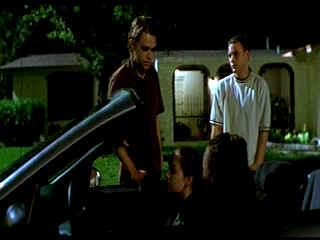

| Bully/ B, B |
| Trimark/2001/115/ANA 1.85 |
Bully is another of writer/director Larry
Clark's raw-edged looks at teen angst. Based on a true story that surfaces
from underneath the Florida palm trees, Bully doesn't pull its
punches. It's an ugly film. Any hope of redemption seems smothered
by the horrible acts committed by numb characters.
Clark doesn't waste any time getting down to the
nitty-gritty aspects of his films. Before you can say Larry Clark, there
are a couple of guys picking up a couple of girls for casual sex. The film
depicts the symbiotic relationship between Marty and Bobby, lifelong
friends. Bobby habitually abuses Marty is a disheartening variety of ways
from physical to mental. When Marty forms a bond with Lisa, he begins to
feel the power of revolt fueled by Lisa's own determination. There's an
inevitability to Bully. It's bound to end with horrific results.
 |
|
Just another night out. ©Trimark
|
The drama is powerful but never pleasant
to watch. Promiscuity is a way of life for these young people. There is so
much perverted behavior. Lots of explicit sexual behavior and nudity in
the film. It's frightening and disgusting. I guess Clark does not want to
make you comfortable. He succeeds unequivocally. These kids are out of
touch with reality. They are stoneheads displaying a dubious level of
intelligence at best.
Amateur night at the dance club is quite a scene.
Bully explodes with sudden jolts of violence.
Zachary Long's screenplay based on a book by Schutze script
jumps ahead far too quickly for my sense of timing. There are virtually no
transitions. Mean nasty behavior permeates almost every moment of Bully.
The film drags as the kids plan their terrible deed. Their confusion
and hesitation slows things down., sapping some of the dramatic power. The
flow seems wrong. The movie seems like it took place in a psychiatric
jungle peopled by wild teen animals rather than in a suburban Florida
neighborhood. Bully is nothing less than frightening in its
portrayal of disaffected aimless teens.
Director Clark knows where he's going, but
his pacing could have been tighter. It's almost as if the material has
been stretched. Surprisingly, there are some ostentatiously annoying cinematic
camera moves, particularly out of step with the film's content. One thing
for certain: Clark knows how to peal back emotions exposing the flesh
beneath a bruised and rotten banana.
The youngsters are very good under Clark's
guidance. Clark seems to be a master of guiding actors down simple
unaffected acting paths. Nick Stahl is an edgy Bobby Kent. Brad
Renfro doesn't always seem quite natural as Marty Puccio, however, I was
never sure if it was part of the character or not. Rachel Minor is spaced
out as Lisa and Bijou Phillips appears almost used up as Ali.
Clark's naturalistic style of shooting often
makes for grainy films. Very fine grain, tightly delivered. Good black
levels. Very nice depth in the night scenes. Shadow detail is in balance
and revealing. Sharp stable images deliver excellent detail
Skintones are natural. Dolby Digital 5:1 surround sound really rocks. It's
punchy and in your face, much like Clark's film. The rap music pounds and
punctuates the action. Some of the dialogue was little difficult to
decipher owing likely to the way it was recorded on the set.
You may need a strong stomach to sit through Bully's
uncompromisingly dark view of life. Bully doesn't pretend to be
entertaining, but it is controversial and thought provoking.
Reviewed on a Sharp 9000VX DLP Projector
|
|
|
|


Looking for information about widescreen movies and hardware. The Widescreen
Movie Center is the place to go.

The AV Science Forum provides great feedback on the latest home
theater equipment with a wide range of opinions. Outstanding home theater
resource.
 Brad Lang continues to add
more interesting material to the extensive collection at Classic Movies.
Everything from actors and actress to your favorite directors is linked at
the site. Brad Lang continues to add
more interesting material to the extensive collection at Classic Movies.
Everything from actors and actress to your favorite directors is linked at
the site.

DVD News, Reviews, Previews, Easter Eggs and more.

The home of director Kevin Smith, replete with inside info on his films
like Clerks, Mall Rats, Chasing Amy and Dogma.

The Movie Poster
Archive include extensive poster images from the films of stars like Susan
Hayward, Kirk Douglas, Katharine Hepburn and many more. Our featured
star is Clark Gable.


A film of extraordinary power that pulls no punches, The Grifters is not
to be missed. Hungry characters on the con, the short con, the long con,
the self con.
|